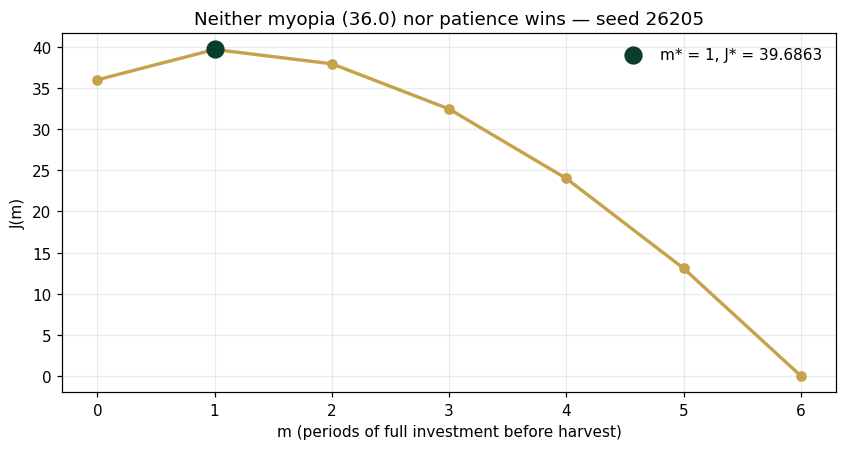
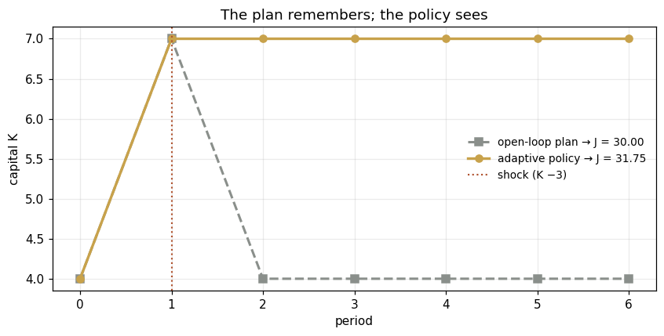

Seed 26205 · Companion to the chapter and AXIOM Module AXIOM-05 (Vol. II)
The clock becomes load-bearing. Three instruments: the invest-then-harvest switching family (neither myopia nor maximal patience wins — the optimum switches at \(m^* = 1\)), policy versus plan under a mid-course shock (the adaptive rule recovers +1.75 the blind plan cannot), and the trajectory-space equivalence check — all 64 binary control sequences enumerated, confirming the switch structure is truly optimal. Mirrored in DCT_V2_Ch05_Lab.xlsx.
import numpy as npimport matplotlib.pyplot as pltplt.rcParams['figure.dpi']=110import numpy as npSEED =26205K0, BUDGET, N =4.0, 3.0, 6# Panel 1: switch family — invest fully for m periods, then consume fullydef J_switch(m):return3.0*(N-m)*np.sqrt(K0+3.0*m)# Panel 2: shock at start of period 3 (K -= 2); payoff each period = c*sqrt(K)SHOCK_T, SHOCK =1, 3.0def run(policy, shock=True): K, J = K0, 0.0for k inrange(N):if shock and k == SHOCK_T: K -= SHOCK i = policy(k, K); i =min(max(i, 0.0), BUDGET) J += (BUDGET-i)*np.sqrt(K) K = K + ireturn J, Kopen_loop =lambda k, K: 3.0if k ==0else0.0# the no-shock optimum, replayed blind# adaptive: re-decide each period with the state it sees — invest iff one more# build period beats consuming now, over the remaining horizondef feedback(k, K): T = N - kreturn3.0if (T-1)*np.sqrt(K+3.0) > T*np.sqrt(K) else0.0# Panel 3: all 64 binary sequences (i in {0, 3})def enumerate_binary(): best, arg =-1.0, Nonefor b inrange(2**N): bits = [(b >> k) &1for k inrange(N)] K, J = K0, 0.0for k inrange(N): i =3.0*bits[k] J += (BUDGET-i)*np.sqrt(K) K += iif J > best: best, arg = J, bitsreturn best, argdef reference_values(): Js = [J_switch(m) for m inrange(N+1)] m_star =int(np.argmax(Js)) Jo, Ko = run(open_loop); Jf, Kf = run(feedback) Jb, bits = enumerate_binary()return {"J_myopic": round(J_switch(0),4),"m_star": m_star, "J_star": round(max(Js),4),"gap_vs_myopic": round(max(Js)-J_switch(0),4),"J_open_shock": round(Jo,4), "J_feedback_shock": round(Jf,4),"feedback_advantage": round(Jf-Jo,4),"K_end_adaptive": round(Kf,4),"binary_best": round(Jb,4),"binary_equals_mstar": int(abs(Jb-max(Js))<1e-9), }if__name__=="__main__": [print(f"{k:20s}{v}") for k,v in reference_values().items()]
Panel 1 — Intertemporal trade-offs: the switch family
Six periods, budget 3 each: invest (build \(K\)) or consume (earn \(c\sqrt{K}\)). The family: invest fully for \(m\) periods, harvest after — \(J(m) = 3(6-m)\sqrt{4+3m}\). Myopia (\(m = 0\)) earns 36; maximal patience (\(m = 5\)) earns 26. The optimum is \(m^* = 1\): J = 39.69 — Intertemporal Trade-Offs Influence Enterprise Optimization Outcomes (Prop.), with the trade-off’s interior visible: one period of sacrifice raises every later period’s base.
ms = np.arange(0, N+1)Js = [J_switch(m) for m in ms]fig, ax = plt.subplots(figsize=(7.8,4.2))ax.plot(ms, Js, "o-", c="#C8A24B", lw=2.2, ms=6)ax.scatter([np.argmax(Js)],[max(Js)], c="#0B3D2E", s=120, zorder=5, label=f"m* = {int(np.argmax(Js))}, J* = {max(Js):.4f}")ax.set(xlabel="m (periods of full investment before harvest)", ylabel="J(m)", title="Neither myopia (36.0) nor patience wins — seed 26205")ax.legend(frameon=False); ax.grid(alpha=.25); plt.tight_layout(); plt.show()print(f"gap over the myopic policy: {max(Js)-J_switch(0):.4f}")

gap over the myopic policy: 3.6863
Panel 2 — Policy versus plan: the shock test
Both start with the optimal no-shock decision (invest at \(k = 0\)). At \(k = 1\) a shock erases the build (\(K: 7 \to 4\)). The open-loop plan replays its schedule blind and earns 30.00. The adaptive policy — re-deciding each period with the state it actually sees — rebuilds for one period and earns 31.75. Optimal Enterprise Decisions Depend upon Future Enterprise States (Prop.); Enterprise Policies Determine Enterprise Trajectories (Prop.) — and a policy that reads the state beats a plan that remembers one.
Jo, Ko = run(open_loop); Jf, Kf = run(feedback)def trace(policy): K, path = K0, [K0]for k inrange(N): Kk = K - (SHOCK if k == SHOCK_T else0) i =min(max(policy(k, Kk), 0), BUDGET) K = Kk + i; path.append(K)return pathfig, ax = plt.subplots(figsize=(7.8,4.0))ax.plot(trace(open_loop), "s--", c="#8A8F8B", lw=2, label=f"open-loop plan → J = {Jo:.2f}")ax.plot(trace(feedback), "o-", c="#C8A24B", lw=2.2, label=f"adaptive policy → J = {Jf:.2f}")ax.axvline(SHOCK_T, c="#B0532F", ls=":", lw=1.4, label="shock (K −3)")ax.set(xlabel="period", ylabel="capital K", title="The plan remembers; the policy sees")ax.legend(frameon=False, fontsize=9); ax.grid(alpha=.25); plt.tight_layout(); plt.show()print(f"adaptive advantage under the shock: {Jf-Jo:+.4f}")

adaptive advantage under the shock: +1.7490
Panel 3 — The equivalence check: all 64 sequences
The Dynamic Enterprise Optimization Equivalence Theorem licenses solving in trajectory space. Executed literally: every binary control sequence (\(i_k \in \{0, 3\}\), \(2^6 = 64\) of them) evaluated. The best is 39.6863 — exactly \(J(m^*)\), and its bit pattern is 100000: the switch structure is not a convenient family, it is the global optimum over the full sequence space.
Jb, bits = enumerate_binary()print(f"best over all 64 binary sequences: {Jb:.4f}")print(f"optimal bit pattern (1 = invest): {''.join(str(b) for b in bits)}")print(f"equals the switch-family optimum: {abs(Jb-max(J_switch(m) for m inrange(N+1)))<1e-9}")
best over all 64 binary sequences: 39.6863
optimal bit pattern (1 = invest): 100000
equals the switch-family optimum: True
Next: Exercises 5.5–5.9 (Part C) vary the shock’s timing and watch adaptation’s value appear and vanish; AXIOM-05’s trajectory theater animates the 64 sequences. Chapter 6 gives the switch structure its theory: Pontryagin. Solutions: IM Vol. II, Ch. 5.